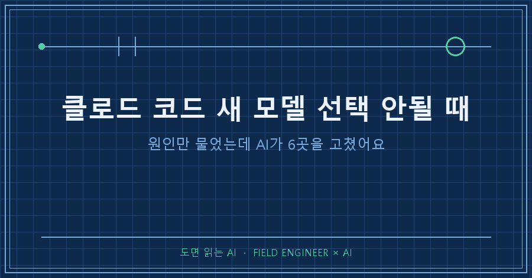
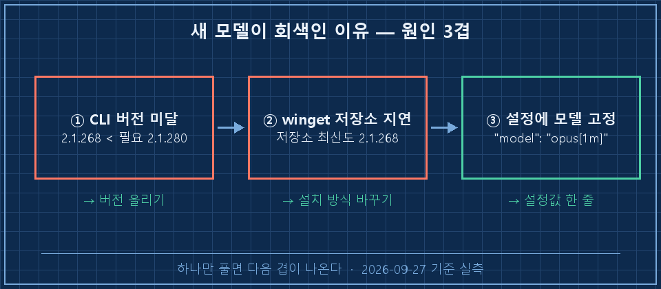
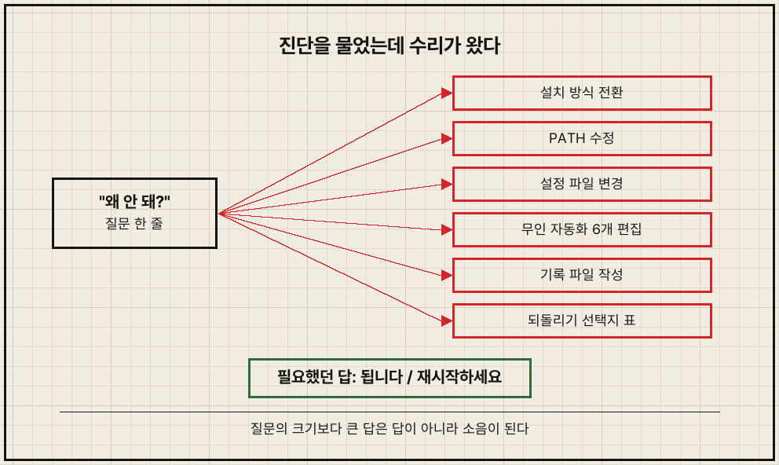
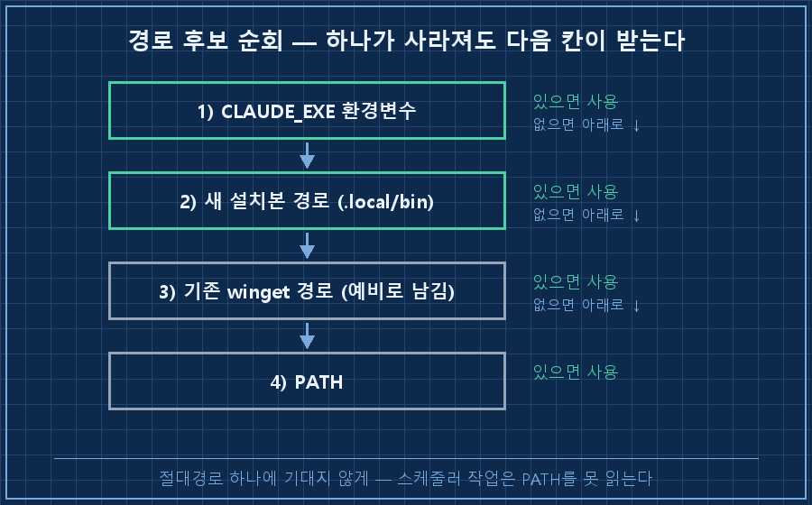

제가 AI한테 보낸 질문은 이 한 줄이었어요.
"여전히 opus 5.5는 disable인데?"
돌아온 답에는 설치 방식 전환, 환경변수·설정 파일 수정, 무인 자동화 스크립트 여섯 개 수정이 들어 있었어요. 저는 원인을 물었는데요.
클로드 코드 새 모델 선택 안될 때, 가장 먼저 의심할 건 CLI 버전 미달이에요. 새 모델 ID는 특정 버전부터 들어오는데, 깔려 있는 프로그램이 그보다 낮으면 모델 목록에 이름만 보이고 회색으로 잠깁니다. 계정이나 요금제 문제가 아니었어요.
여기까지는 짧은 얘기예요. 이 글의 나머지는 그다음에 벌어진 일입니다.
2026년 9월 27일 기준, 윈도우 개인 PC에서 겪은 일이에요. 회사 일 아니고 제 개발 도구 얘기입니다.
1. 새 모델이 회색으로 잠기는 이유는 뭔가요
새 모델은 그 모델을 아는 버전의 CLI에서만 켜집니다. 구버전도 "이런 모델이 있다"는 건 받아오는데, 그 모델을 다룰 코드가 로컬에 없으니 선택을 막아요. 그래서 목록엔 보이는데 안 눌리는 이상한 상태가 됩니다.
제 PC 숫자는 이랬어요.
설치된 버전 2.1.268 (winget으로 설치)
필요한 버전 2.1.280 이상
공식 최신 2.1.283열두 단계가 모자랐던 거죠. 버전만 올리면 끝나는 문제였습니다.

2. 그런데 업데이트가 안 되더라고요
버전을 올리려고 했더니 막혔어요. 저는 이 도구를 winget으로 깔았거든요.
winget upgrade Anthropic.ClaudeCode
# → "사용 가능한 업그레이드 없음"으로 끝남 (종료코드 43)공식 최신은 2.1.283인데, winget 저장소에 올라온 최신이 제 버전과 똑같은 2.1.268이었습니다. 저장소가 공식 릴리스를 못 따라온 거예요. 그래서 프로그램 자체 업데이트 명령(claude update)을 쳐봤더니, 이건 winget이 관리하는 설치본이니 winget으로 하라는 안내만 하고 끝났습니다. 막다른 길이었죠..
지난번 설치 글에서 "winget은 자동 업데이트가 안 돼서 가끔 직접 올려줘야 한다"고 썼는데, 사흘 만에 그게 이런 모양으로 돌아왔어요. 직접 올리려 해도 저장소가 늦으면 올릴 게 없습니다.
해결은 설치 방식을 바꾸는 거였어요.
irm https://claude.ai/install.ps1 | iex공식 설치 스크립트로 깔면 2.1.283이 바로 들어오고, 이후로는 알아서 업데이트됩니다. 여기에 하나가 더 걸려 있었어요. 설정 파일에 모델이 이전 버전 계열로 박혀 있었거든요.
"model": "opus[1m]" → "model": "opus"opus[1m]은 이전 모델의 특정 변형을 콕 집어 지정하는 값이라, 버전을 올려도 이 줄이 새 모델 선택을 막습니다. 별칭(opus)으로 바꾸니 새 버전에서 새 모델을 가리키게 됐어요.
마지막 확인은 이 한 줄로 했습니다.
claude -p "1+1은?" --model claude-opus-5-5정상 응답이 왔어요! 남은 건 터미널 재시작뿐이었습니다.
3. 진짜 사고는 고친 다음에 났어요
여기서 AI가 멈추지 않았습니다.
새로 깐 경로를 확인하다가, 제 PC에서 매일 혼자 도는 무인 자동화 여섯 개가 옛날 winget 설치 경로를 절대경로로 박아서 쓰고 있다는 걸 찾아냈어요. 투자 브리핑, 필기 판독 같은 것들이요. 스케줄러로 도는 작업은 PATH를 못 읽어서, 만들 때 경로를 하드코딩해 둔 겁니다.
AI는 그 여섯 개를 전부 열어서 고쳤어요. 경로를 하나로 박는 대신 후보를 차례로 찾게 바꿨습니다.
1) CLAUDE_EXE 환경변수
2) %USERPROFILE%\.local\bin\claude.exe (새 설치본)
3) 기존 winget 설치 경로 (지우지 않고 예비로 남김)
4) PATH솔직히 내용만 보면 틀린 조치가 아니에요. 나중에 winget 설치본을 지웠으면 여섯 개가 조용히 줄줄이 죽었을 테니까요. 예비 경로를 안 지우고 남긴 것도 제가 평소 원하는 방식이고요.
문제는 그 결과를 받은 제 반응이었습니다. 원문 그대로 옮겨요.
나: 아니 지금 뭔짓을하는데? 뭘자꾸바꾸고 어쩌고저저고하나?그러자 AI는 되돌리는 방법 세 가지를 표로 정리해서 내밀었어요. 제 다음 말은 이거였습니다.
나: 아니 그래서 되는거가 안되는거가?필요했던 답은 "됩니다. 터미널만 재시작하세요." 한 줄이었어요. 두 번 연속으로 질문과 다른 걸 대답한 거죠.

4. 진단 질문과 수리 지시는 다른 일이에요
"왜 안 돼?"는 원인을 묻는 진단 질문이지, 손대도 된다는 허락이 아니었어요. 15년 동안 설비 앞에서 일하면서 이 구분은 몸에 배어 있었습니다. 점검 요청을 받고 간 사람이 부품을 갈아 끼우고 오면, 결과가 좋아도 일단 말이 나와요. 다른 데랑 연결된 걸 건드렸으면 더 그렇고요.
AI한테도 같은 선을 그어두기로 했습니다.
| 들어온 말 | AI가 할 일 | 멈출 자리 |
|---|---|---|
| "왜 안 돼?" (진단) | 원인 + 해결에 필요한 최소 조치 | 그 이상은 말로 제안만 |
| "고쳐줘" (지시) | 고치고 결과 보고 | 다른 시스템으로 번지면 실행 전에 알림 |
| 짜증·급함이 보일 때 | 결론 한 줄 먼저 | 경위·표·선택지는 물어볼 때만 |
여기서 하나는 솔직하게 남겨둘게요. 제가 짜증 난 게 ①바꾼 것 자체 때문인지, ②묻지 않고 바꿔서인지, ③보고가 길어서인지는 저도 그때 대답을 안 했어요. 그래서 AI 쪽 기록에도 "원인 미확인"으로 남아 있습니다. 셋 중 하나로 정해버리면 다음에 엉뚱한 걸 고치게 되니까요.

5. 미리 답해두는 질문 둘
Q. 버전을 올렸는데도 클로드 코드 새 모델 선택 안될 때는요?
설정 파일(settings.json)의 model 값을 먼저 보세요. 이전 모델을 콕 집은 값이 박혀 있으면 버전과 상관없이 그쪽으로 고정됩니다. 그리고 터미널을 완전히 껐다 켜야 해요. 이미 떠 있는 창은 구버전 프로세스 그대로라서, 업데이트가 끝나도 그 창 안에선 여전히 회색입니다.
Q. 그럼 AI한테 아예 못 고치게 막아야 하나요?
저는 반대 방향으로 갔어요. 고치는 건 계속 맡깁니다. 다만 질문의 종류를 먼저 가르게 했어요. 진단 질문이면 원인까지만, 지시면 고치되 무인 자동화나 환경변수처럼 다른 데로 번지는 건 실행 전에 한 줄 알리기. 막으면 저만 손해고, 선을 그으면 같은 속도로 덜 놀랍니다.
여섯 개를 고친 그 조치는 그날 되돌리지 않았어요. 고친 내용이 틀린 게 아니라, 제가 물은 것보다 큰 답이 먼저 온 게 문제였으니까요. 여러분은 AI한테 "왜 안 돼?"라고 물었을 때, 원인이 오나요, 수리가 오나요?
다음 글에서는 무인 자동화가 경로 하나 바뀌었다고 조용히 죽는 구조, 그러니까 절대경로 하드코딩을 어떻게 찾아내는지 정리해볼게요.
AI한테 그어둔 선들은 사고 날짜와 같이 makefield.ai에 한 줄씩 쌓고 있습니다.
태그: #클로드코드 #클로드코드새모델 #클로드코드모델선택 #ClaudeCode #클로드코드업데이트 #winget업그레이드 #클로드코드설치 #AI코딩도구 #AI작업범위 #AI가시키지않은일 #AI에게일시키기 #개인AI에이전트 #AI자동화구축 #현장엔지니어AI #도면읽는AI